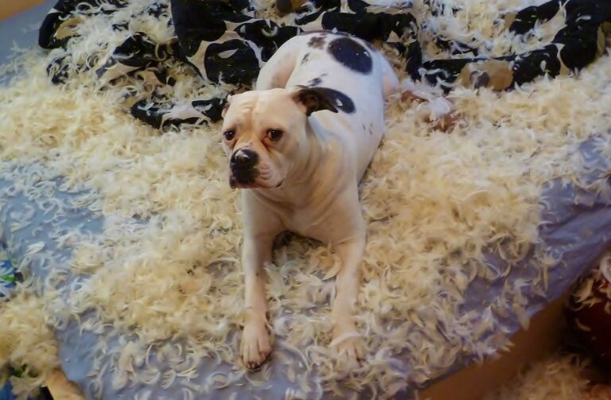
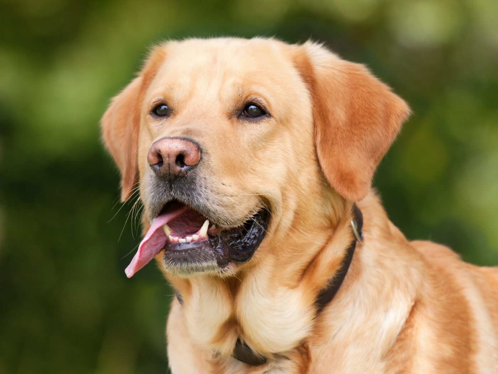
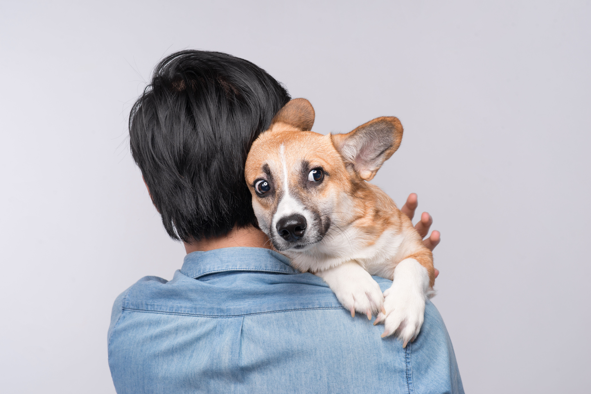
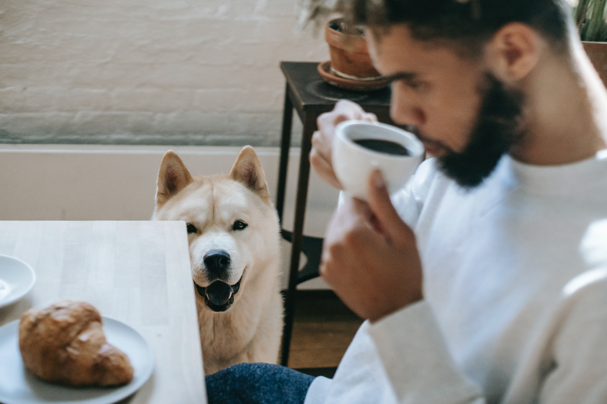
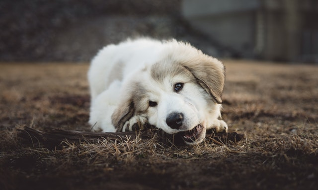
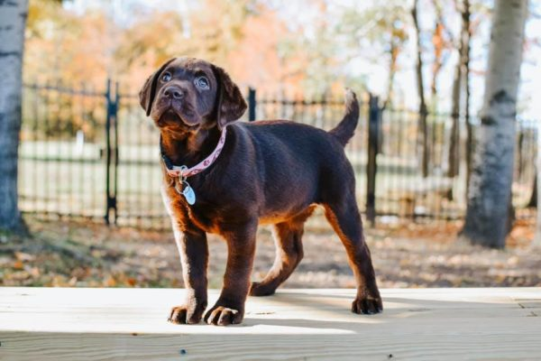
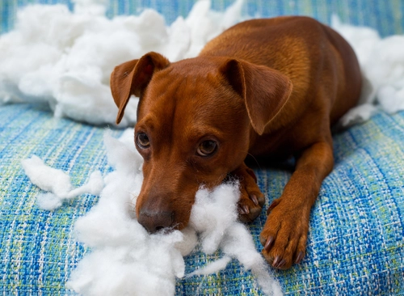
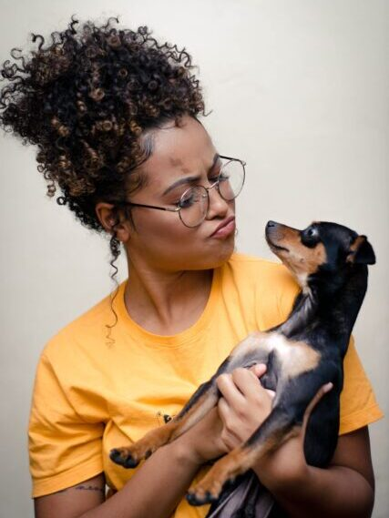

Dog Behavior
Labradors Deemed The “Naughtiest Breed” In New Study
When you love a dog, you learn to live with the fact that they have no respect for your belongings. Whether they’re chewing on phone chargers or urinating on expensive rugs, a dog can be surprisingly adept at destruction.
Recently, Money.co.uk gathered over 20,000 owner opinions for a study determining which breeds exhibit the naughtiest behaviors. Here are some of the most interesting findings from that report.

Impressive Naughty Stats For The Labrador
For this study, Money looked for specific dog breeds mentioned as well as particular types of damage they cause. According to responses, the Labrador Retriever stands out as the breed most likely to misbehave.

The Lab ranked high in many survey categories. This breed was reported twice as many times as Schnauzers, Cavapoos, or Cocker Spaniels for peeing or pooping in the house and on rugs.
Labradors also came in second in the category of dogs who eat the most things they’re not supposed to. The winner of that category is the Beagle. Beagles also ranked pretty high in terms of general havoc-wreaking.
The Labrador Retriever also snagged a fourth-place spot in the “diggers” category, losing to the Shih Tzu. Those little dogs reportedly wreck a number of gardens.
On a more positive note for the naughty Lab, they’re apparently one of the most loved breeds on the internet. The Lab came in sixth in this category, which naturally was won by the Golden Retriever.
Of course, one thing worth noting is how popular the Labrador Retriever breed is. According to the American Kennel Club, the breed has been in the top 10 most popular dogs every year since the 1970s. Obviously, this dog has many lovable traits that make their destructive and anti-social behaviors worth it.
As long time breeder Erin Henlon-Hall puts it:
“This is a do-everything breed that needs to be with its humans. It personifies the definition of versatility—hunting, showing, family, dock diving, tracking, obedience. It’s as American as baseball, hot dogs, and apple pie.”

What Our Dogs Destroy Most
Wondering what specific damage dogs cause the most? According to the results of the study, these household items are the things our dogs love to destroy:
- Cables
- Wires
- Doors
- Carpet
- Sofas
This additional fact may serve as less of a surprise: dogs are more destructive than cats. Plus, as far as the accidental breaking of items, Staffordshire Bull Terriers were found most likely to knock things over by mistake.
Your Personality May Affect The Way Your Dog Learns To Behave
When it comes to training dogs, there’s no one-size-fits-all solution. Dogs can develop behavioral issues for a variety of reasons. Fortunately, dogs’ problem behaviors can be corrected with the right treatment (and some time and patience). A team of UPenn researchers wanted to understand how best to accomplish this.
Since dogs learn so much from their people, the researchers considered how we, the parents, may affect our dogs’ training. The study, published in Frontiers in Veterinary Science, indicates that people’s particular personalities matter more than you’d think

For the research, 75 dogs and their human partners attended a six-month veterinary behavioral program. The people filled out a human personality assessment questionnaire, as well as a dog behavior questionnaire on their furry partner’s behalf. At both three and six months into the study, participants filled the dog behavior questionnaire out again.
The dog assessment asked for ratings on things like excitability, separation anxiety, and responsiveness to training. For the human personality assessment, participants agreed or disagreed with statements about their openness to new experiences, extraversion or introversion, and more.
What The Data Says Affects Dog Training And Behavioral Therapy
Ultimately, researchers found that a dog’s age, sex, and size can affect behavioral therapy’s success. At the end of the program, larger dogs with aggression issues showed greater improvement than smaller dogs. One possible reason for this is that people are more attuned to larger dogs’ behavior since they present more of a physical safety risk. As you’d expect, older dogs are more resistant to change as well.
Fascinatingly, the data also indicates differences in the way human extroverts and introverts’ dogs learn behaviors. Powell, the lead author of the study, explained:
“Extroverted owners were more likely to see improvements in dogs’ fearful behaviors and introverted owners less so. Introverted owners may find it tough to leave their dog or give it space if it is required as part of the dog’s treatment.”

The researchers acknowledge the possibility that people with higher levels of openness embraced newer training methods and secondary opinions. Therefore, extroverted parents were less likely to have fearful dogs. Still, the conclusion of the study acknowledges that more research is necessary in this realm.
“The associations between canine behavior and owner extraversion and openness did not persist at 6-months, so further research is needed to understand the long-term influence of owner personality on behavioral treatment outcomes.”
“There Are No Bad Dogs…”
Importantly though, the human parent’s compliance is what really impacts training effectiveness. People who won’t or can’t accept training methods will likely end up with a misbehaving dog.
Sometimes, people don’t even know when they’re reinforcing bad behaviors. This study indicates your personal attachment style could be convincing your dog these naughty actions are okay. Things like smiling when your unbearably cute dog jumps up to steal table food can really make a difference.

With more research and analysis, veterinarians hope to offer targeted advice someday and predict individual dogs’ treatment outcomes. Given how many dogs with correctable behavioral issues end up in shelters, this research is all the more important.
Study Reveals That Dogs Have Rebellious Teenage Phase
The teenage years are tough for humans. We balk at authority, engage in risky behavior, and think we are entirely immune to any and all consequences. A groundbreaking study has revealed that dogs go through a similar teenage phase. It is fraught with raging hormones and rebellious behavior, just like humans. Read on to see if your dog’s defiance could be tied to this passing period.

Pooch Puberty Impacts Behavior
Humans become teenagers when their bodies go through puberty. The chemical changes happening internally throw the budding human into an awkward stage. Human teenagers are thought to be defiant, unreasonable, difficult to parent, and wildly emotional. It turns out when a dog enters puberty, their bodies are also flooded with hormones, and their brains are being rewired, too. Dogs become defiant and difficult to parent during this phase, too! How did researchers discover this?
Service Dogs in Training Studied Pre and Post-Puberty
Lucy Asher is a behavioral ethologist at Newcastle University and the lead author of the new study, published in Biology Letters. She and her team gathered data from caretakers of guide dogs in training. They measured bonding behavior and how that impacted the age a puppy entered puberty. They also measured how obedience changed in dogs before and after puberty. Here’s what they did.

Obedience Before and After Puberty Hits
The team of scientists assessed a group of 69 guide dogs at five months old and at eight months old. The dogs were given a simple command to sit. The command came from their primary caregiver one time and a total stranger the next time. The five-month-old pre-pubescent pups quickly obeyed both their caregivers and the stranger. However, after puberty, the dogs repeatedly refused to sit for their primary caregivers. But get this? When a stranger asked them to sit, they did so immediately! Just like human teenagers, these dogs were the most rebellious against those who care for them the most.

Attachment and Attention Seeking Behaviors Tied to the Age of Puberty
To measure how puberty changes behavior, the team gathered data from a separate group of 70 female German Shepherds, Golden Retrievers, and Labrador Retrievers that were being trained as guide dogs. Caregivers were asked to score the dogs on attachment and attention-seeking behaviors. Things they looked for were being especially bonded to a particular person, sitting very close to humans at all times, or showing separation anxiety, such as shaking when left alone.
Dogs with high scores in being clingy or anxious indicated a relationship with a caregiver that was atypical. These anxious pups entered puberty earlier—at about five months, compared with eight months for those with lower scores than the more independent and confident pups. This finding mirrors what research shows happens in human girls, too. Human teenage girls with “poor parental relationships” have been shown to enter puberty at a younger age. This leads to insecurity for the teenager and heightened disobedience to that particular parent. This finding is “striking” in how it aligned it is between female dogs and female humans and their relationships with their primary caretaker

Teenage Dogs More Likely to be Surrendered to Shelter
When a dog reaches puberty and suddenly resists obeying their human, it can lead to sad consequences. Many humans work through this phase with their dogs, but others throw in the towel. Some dogs are punished, and some are given away altogether. In fact, teenage dogs are the most likely age group to land in U.S shelters. Lucy Asher said, “…owners often feel like they’re failing when their puppies reach adolescence.”